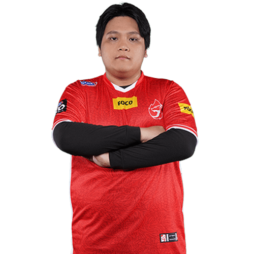
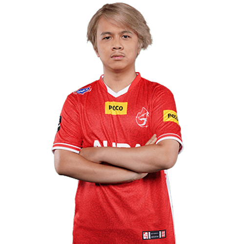
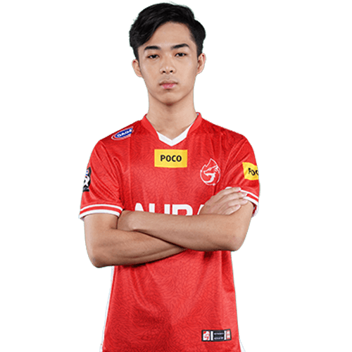
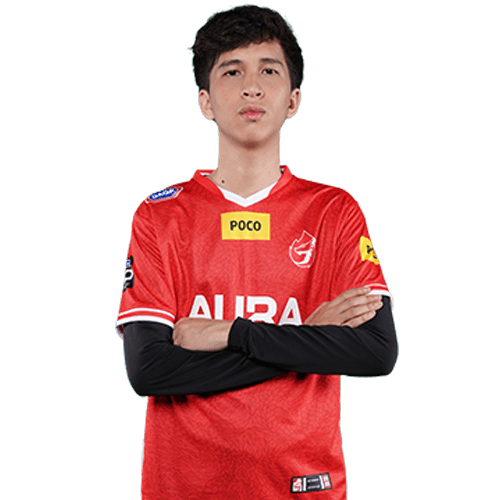
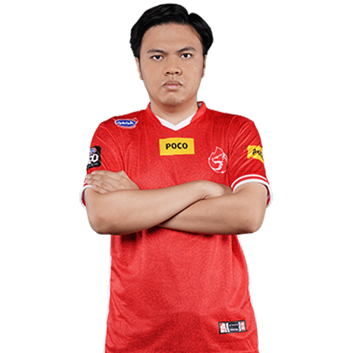

Member
Asal mula
|  |
Nama: |
Jehuda Jordan Sumual/High |
| Tanggal Lahir: |
31 Juli 2001 |
| Kebangsaan: |
Indonesia |
| Posisi: |
Jungler |
High sebelum bermain di MPL Season 6, dia bermain di MDL sejak season 1.
Kemampuannya baru terlihat ketika memasuki MDL Season 2.
Lalu pada pertengahan season High bertukar posisi dengan Vanss sehingga dirinya bermain di MPL Season 6.
|  |
Nama: |
Regi Marviola/Fluffy |
| Tanggal Lahir: |
5 Des 2001 |
| Kebangsaan: |
Indonesia |
| Posisi: |
EXP Laner |
Sebelum resmi bergabung dengan Aura, Qeira bermain dengan tim DG Esports dengan nama tim DG X Xavier.
Lalu pada MDL Season 2 Qeira akhirnya bergabung dengan Aura.
Meskipun baru bergabung, Qeira langsung dipromosikan ke tim Aura Fire MPL Season 6 bertukar posisi dengan Tezet.
|  |
Nama: |
Leonardo Prasetyo Agung/Kabuki |
| Tanggal Lahir: |
1 Jan 2003 |
| Kebangsaan: |
Indonesia |
| Posisi: |
GoldLaner |
Aura Kabuki berposisi sebagai Gold Lander di Aura Fire.
Meski demikian bersama Qiera, ia juga jadi sosok offlaner yang mampu menghalau pergerakan lawan-lawannya.
Mereka menjadi nama yang disebut-sebut sebagai salah satu yang paling diwaspadai ketika berhadapan dengan AURA.
|  |
Nama: |
Erico/God1va |
| Tanggal Lahir: |
6 Okt 2002 |
| Kebangsaan: |
Indonesia |
| Posisi: |
Roamer |
Sempat dijuluki badut saat gagal dalam gelaran MPL Indonesia Season 7 lalu,
Aura Godiva tentu bertekad akan mengerahkan kemampuan terbaiknya saat MPL S8 kali ini.
|  |
Nama: |
Usep Satiawan/Facehugger |
| Tanggal Lahir: |
18 Juli 1997 |
| Kebangsaan: |
Indonesia |
| Posisi: |
Midlanner |
Facehugger bergabung dengan AURA Esport sebagai seorang analis game untuk tim Mobile Legends Development League (MDL).
Ia lalu terjun sebagai pemain pada Mobile Legends Profesional League (MPL) Indonesia Season 7.